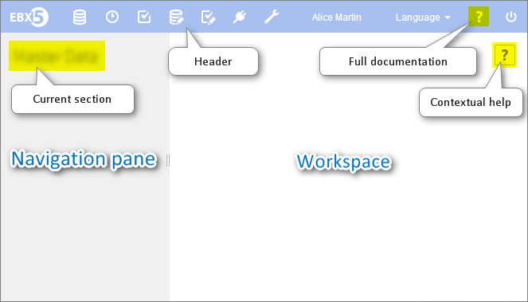

Using the EBX5 user interface
Section contents
Finding your way around the EBX5 interface
The EBX5 interface is separated into several general regions, referred to as the following in the documentation:
Header: Displays the user currently logged in, the user language preference selector, a link to the product documentation, and a logout button.
Menu bar: The functional categories accessible to the current user.
Navigation pane: Displays context-dependent navigation options.
Workspace: Main context-dependent workarea of the interface.
The following functional areas are displayed according to the permissions of the current user: Data, Data Spaces, Modeling, Data Workflow, Data Services, and Administration.

Where to find help on EBX5
In addition to the full standalone product documentation, help is accessible in various forms within the interface.
Contextual Help
When you hover over an element that has contextual help, a question mark appears. Clicking on the question mark opens a panel with information on the element.

When a permalink to the element is available, a link button appears in the upper right corner of the panel.
 User guide table of contents
User guide table of contents